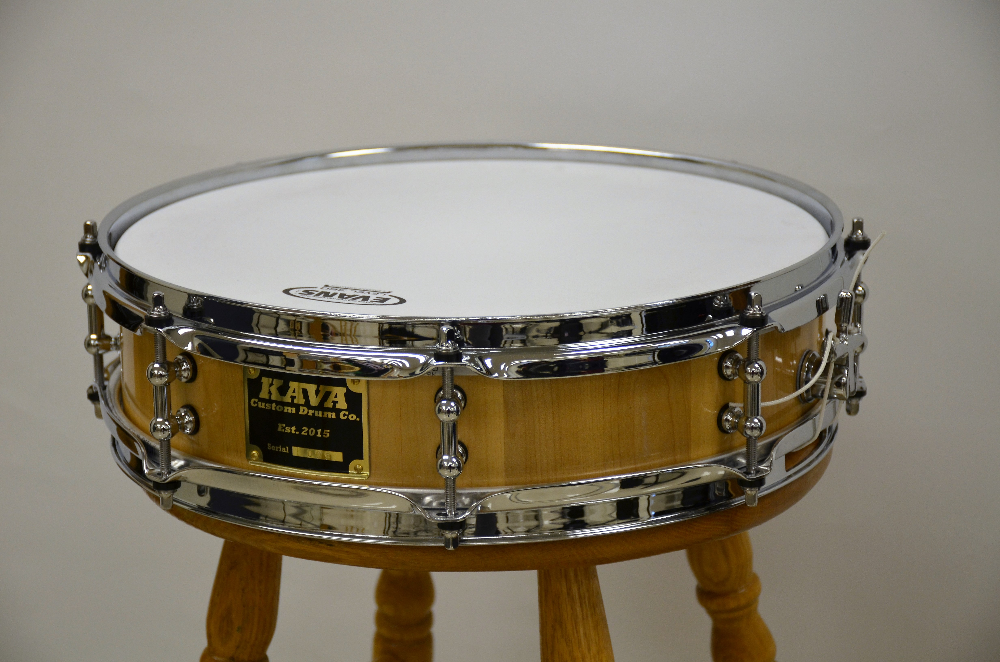

008: 14" x 3/5" Piccolo Snare
Made from select maple, this little snare packs a bit of a punch. The George Way beer tap strainer is a throwback (pardon the obvious pun) to the 50's. The simple yet effective reissue of the classic strainer has the take-up adjustment on the butt plate where the strainer itself is a simple on/off lever... A perfect feature for this small drum.